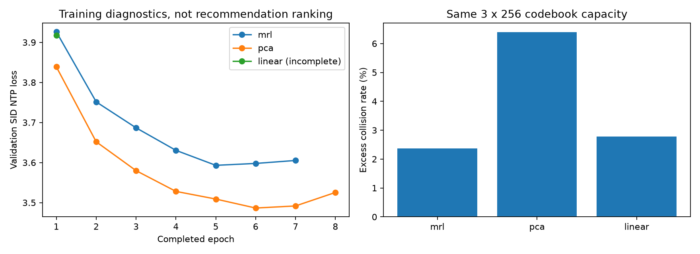

实验已停止，不再启动新的训练或评测。本轮没有正式 Recall@100，不支持对五种方案或三种 i2i 设置作推荐效果排名。
C：原生 MRL 在第7轮早停，最佳第5轮；D：PCA在第8轮早停，最佳第6轮。A：无top-k线性头完成i2i和SID，GR在第2轮因显存安全阈值中断。B/E和两种Swing设置均未开始。
| 设置 | 方案 | 状态 | SID碰撞率 | 最佳轮次 | 验证损失 |
|---|---|---|---|---|---|
| fixed | mrl | trained_pending_test | 0.02375238947411229 | 5 | 3.5930601890924088 |
| fixed | pca | trained_pending_test | 0.06389555456135354 | 6 | 3.4864666845769428 |
| all_cooccurrence | linear | interrupted_gpu_memory | 0.027819579452556198 | 1 | 3.9171952269680244 |
| swing_top1_top5 | linear | not_started | None | None | None |
| swing_mutual_top1 | linear | not_started | None | None | None |
| all_cooccurrence | ortho | not_started | None | None | None |
| swing_top1_top5 | ortho | not_started | None | None | None |
| swing_mutual_top1 | ortho | not_started | None | None | None |
| all_cooccurrence | lora | not_started | None | None | None |
| swing_top1_top5 | lora | not_started | None | None | None |
| swing_mutual_top1 | lora | not_started | None | None | None |
三个已生成SID每层均使用256/256编码，未见码本塌缩。C的碰撞率2.38%，A为2.78%，D为6.39%；最大冲突组分别5、7、8。这里碰撞率定义为1−唯一完整SID数量/商品数量。
PCA的最佳验证损失3.4865低于MRL的3.5931，但SID分布、熵及碰撞率不同，较低交叉熵不等于更高推荐命中率。A仅完成一轮验证，不能据此比较收敛表现。C/D/A共40次条件依赖检查全部通过：置换历史或错误SID前缀均使损失增大，这说明模型使用了条件信息，仍不能替代检索评测。
11月2日23:10曾因新增目录后清单路径读取错误停止；11月3日人工检查修复后继续。11月3日08:49再次因整张GPU显存约6.55 GiB超过6.2 GiB阈值停止，当时利用率14%、温度65°C；累计利用率峰值89%。没有证据能从现有记录确定显存上升属于哪个进程，不能直接断言训练显存泄漏。安全标记与用户停止标记均保留，未重启。
数据为Amazon2023官方5-core乐器：57,439用户，24,587商品，511,836交互。全局时间划分409,468/51,184/51,184；商品元数据完整。C/D为固定参照，不接收i2i监督；不是五个方案等监督的结构消融。Swing只使用训练期数据：top1/top5有2,827对，覆盖18.7%商品；互为top1有723对，覆盖5.9%。三个设置的比较尚未执行。
GR实际每轮含验证约10分钟；C共71.6分钟，D共81.5分钟。短程真实历史测速约2.33倍提速，使用临时SID，仅用于速度诊断。A/B/E每个embedding设置计划2,000更新；GR最多10轮、patience2。所有测试原计划排在训练队列之后，因此尚未产生测试指标。

机器可读结果：summary.json / summary.csv。代码见仓库experiment5；证据见evidence。商品交互、用户标识、商品向量和模型权重未上传，权重在本机保留并记录校验和。